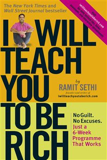

Library › Money & Finance
I Will Teach You to Be Rich — Summary & Key Lessons

No guilt, no excuses, no BS — a 6-week program that automates your money and lets you spend extravagantly on what you love.
📖 OPEN THE FULL INTERACTIVE BREAKDOWN →🌐 Read it in Hindi, Hinglish, Gujarati, Tamil & 22 more languages — free, with audio.
💡 The Big Idea
Sethi's anti-guilt manifesto: personal finance advice obsesses over $3 coffees while ignoring the five decisions that actually matter (automation, fees, asset allocation, salary negotiation, and the big purchases). His 6-week program: optimize credit cards (rewards + credit score as an asset), open high-value bank accounts, start investing through the ladder (401k match → debt → Roth/IRA → more), build the CONSCIOUS SPENDING PLAN (not a budget: 50-ish% fixed costs, 10% investments, 5-10% savings goals, and 20-35% GUILT-FREE spending — lavish on your loves, brutal on your mehs), and AUTOMATE the whole machine so money moves itself on payday. Investment doctrine: low-cost index/target-date funds, never stock-picking ('nobody beats the market consistently — especially the professionals charging you to try'), and the 85% solution: done beats perfect. Rich, defined properly, is YOUR rich life — designed, then funded.
🧠 The 6 Key Lessons
Lesson 1: The Conscious Spending Plan: Budgets Are for Guilt, Plans Are for Living
Chapter 4: Conscious Spending
Sethi's replacement for the budget (which he calls a guilt machine nobody maintains): the CONSCIOUS SPENDING PLAN — four buckets with target ranges: FIXED COSTS (rent, utilities, debt payments: ~50-60% of take-home), INVESTMENTS (~10%), SAVINGS GOALS (vacations, house fund, buffer: ~5-10%), and the revolutionary bucket — GUILT-FREE SPENDING (~20-35%): money pre-designated for whatever you love, spent WITHOUT accounting or apology. The philosophy is 'money dials': identify the two or three spending categories that genuinely light you up (travel, food, convenience, fitness — everyone's dials differ) and turn them UP extravagantly, funded by turning every indifferent category down to zero ('cut costs mercilessly on things you don't love' — the cable package you forgot, the subscriptions, the status purchases serving nobody). The war he declares: on the latte-shaming school of finance — $3 decisions are rounding errors; the plan wins on the $30,000 decisions and the automation, then hands you the latte guilt-free.
📖 Example: Sethi's recurring exhibits: his friend who spends five figures annually on shoes — gasp-inducing until the reveal: her plan is funded, investments automated, fixed costs lean; the shoes are her dial, turned up CONSCIOUSLY, and she's richer than her… Read the full example →
⚡ Do this: Build your plan this week: last month's spending sorted into the four buckets, percentages computed. Then pick your two money dials (what you'd love MORE of) and your kill list (three indifferent categories cut to zero). Redirect the kills into the dials and the investment bucket — guilt officially retired.
Lesson 2: The Ladder of Personal Finance: Where Every Rupee Goes First
Chapters 3, 7: The Ladder / Investing
The order-of-operations that removes all money-placement anxiety: RUNG 1 — employer retirement match (if available): contribute enough to capture every matching rupee (an instant 50-100% return; skipping it is declining free salary). RUNG 2 — kill high-interest debt (credit cards' 20-40% APR is an emergency: no investment beats paying it off; use the snowball-or-avalanche method, but START). RUNG 3 — tax-advantaged retirement account (Roth/IRA equivalents; in India: PPF/NPS/ELSS logic applies) funded to its limit. RUNG 4 — back to the employer account toward its max. RUNG 5 — regular taxable investing. The investing doctrine attached: LOW-COST INDEX FUNDS or a single target-date fund ('the 85% solution in one purchase') — never individual stocks, never actively-managed funds (the fee chapter's math: a 1% expense ratio quietly consumes ~28% of a lifetime's returns; fund managers underperform indexes with metronomic reliability), and never timing the market: time IN the market is the whole game, which is why the ladder's first rule is START NOW at any amount.
📖 Example: Sethi's fee autopsy is the chapter readers never unsee: two identical investors, same returns, one paying 0.1% (index) and one 1% (managed 'expert') — the fee difference compounding into hundreds of thousands lost, for performance that was WORSE on average.… Read the full example →
⚡ Do this: Climb the ladder TODAY, not perfectly: verify you're capturing any employer match (fix immediately if not), list debts by interest rate and automate the attack on the highest, and open/fund the tax-advantaged account with ANY amount — plus one target-date or index fund purchase this week. Imperfect and started beats optimal and imaginary.
Lesson 3: Automation: The Money System That Runs Itself
Chapter 5: Save While Sleeping
The system that makes the plan real: AUTOMATION — every account linked, every flow scheduled, so that on payday the money moves itself: paycheck → employer retirement (pre-salary), then auto-transfers fire: investment account (the 10%), savings goals (each sub-account labeled: 'Goa trip', 'emergency fund', 'house'), fixed-cost bills (auto-paid from checking), and what remains in checking IS the guilt-free bucket — spendable to zero with a clean conscience because everything important already happened. The psychology Sethi engineers around: willpower-based finance fails on schedule (the monthly 'I'll transfer what's left' ritual reliably transfers nothing — Parkinson's law eats it); automation inverts the default: saving becomes the thing that happens when you do NOTHING. His maintenance promise: a properly built system needs ~90 minutes of setup and then one hour PER MONTH of oversight — the rest is living. The chapter's quiet radicalism: being 'good with money' was never about discipline; it was about plumbing.
📖 Example: Sethi's own diagram — reprinted by a generation of finance bloggers — shows the full pipe network: paycheck splitting at the source, five automated tributaries, bills paying themselves on the credit card (points harvested), card auto-paid in full from… Read the full example →
⚡ Do this: Book the 90-minute setup session this weekend: schedule every transfer for payday+1 (investments, each savings goal, bills to auto-pay), name the sub-accounts after their actual goals, and set the calendar reminder for the monthly one-hour review. Then obey the prime directive: don't touch the plumbing between reviews.
Lesson 4: The Big Wins: Negotiation, Big Purchases & Your Rich Life
Chapters 8–9: Easy Maintenance / A Rich Life
The finale attacks the decisions worth 1000 lattes. SALARY NEGOTIATION: the single highest-ROI conversation in existence — a modest raise, compounded over a career of percentage-based increases, is worth lakhs/hundreds of thousands; Sethi's playbook: never name a number first, arrive with documented value (the briefcase technique: a written 30-60-90 plan for the role), practice aloud, and negotiate EVERY offer ('it's expected — the only person penalized is the one who doesn't ask'). BIG PURCHASES: cars and homes are where plans die — his rules: buy cars planning to drive them 10+ years (total-cost math, not monthly-payment seduction), and treat the house as a purchase to stress-test (total monthly cost under ~28% of gross, 20% down, and run the rent-vs-buy math honestly — renting while investing the difference frequently WINS, homeownership dogma notwithstanding). And the destination: A RICH LIFE — defined by YOU in specifics (Tuesday flexibility, parents' flights paid, the annual month abroad), because the system was never the point: 'the whole reason to automate your money is so you can stop thinking about it and go LIVE.'
📖 Example: The negotiation chapter's showcase: Sethi's students using the briefcase technique — sliding a written plan for their first 90 days across the interview table — reporting five-figure jumps from a single prepared conversation; his compounding math shows a… Read the full example →
⚡ Do this: Schedule the negotiation: whether raise or new offer, prepare the briefcase (documented wins + 90-day plan), rehearse aloud twice, and never say a number first. Run total-cost math on any pending big purchase. And write the Rich Life page: three specific, vivid line-items — then point one automated savings goal at the first of them, this week.
Lesson 5: Optimize the Big Wins: The 80/20 of Your Money Life
Part 3: The Big Wins
Sethi's framework borrows the Pareto principle: 80% of your financial results come from 20% of your actions — so obsess over the big wins, not the small frugalities. The big wins: your salary (negotiate it), your housing (the single biggest expense), your investment allocation (the difference between good and great is decades of compounding), and your major purchases (cars, weddings). Skip the lattes if you like, but know that saving ₹50 a day is a rounding error next to negotiating a ₹50,000 raise. Most people do it backwards: they stress over small savings and ignore the decisions worth lakhs.
📖 Example: Sethi tells of a client who agonized over couponing for years while never once negotiating her salary — a single negotiation would have been worth more than a decade of coupons. The big win wasn't glamorous; it was one uncomfortable conversation. Read the full example →
⚡ Do this: List your financial 'big wins' (salary, rent, investments, major purchases). Pick one and take one concrete step to improve it this month — negotiate, refinance, or reallocate.
Lesson 6: Investing for Grownups: Index Funds, and the Boring That Beats the Exciting
Part 4: The Investing
Sethi's most repeated advice, backed by decades of data: for 99% of people, low-cost index funds beat stock picking, timing and 'exciting' investments. The reasons are structural: fees compound against you, no one consistently predicts markets, and your own behaviour (selling low, buying high) destroys returns. His practical system: automate a fixed percentage into index funds every month, ignore the news, and rebalance once a year. Boring is the feature — the people who do nothing with their investments, except keep contributing, consistently outperform the ones who do a lot. Wealth is built by patience, not brilliance.
📖 Example: Sethi shares how his own portfolio outperformed most 'active' investors simply by never reacting — through crashes, booms and panic headlines, the automated monthly investment kept buying, and the compounding did the rest. His most profitable decision was… Read the full example →
⚡ Do this: If you invest, set up an automatic monthly transfer into a low-cost index fund this week. If you already have one, promise yourself not to touch it for a year.
✅ 5-Step Action Plan
- Build the Conscious Spending Plan; turn up two dials, kill three mehs.
- Climb the ladder today: match, debt attack, tax-advantaged account, index fund.
- Automate everything in one 90-minute session; review monthly for one hour.
- Prepare the briefcase and negotiate; total-cost every big purchase.
- Write the Rich Life page and fund line-item #1.
⚠️ When This Doesn't Work
Ramit's 'automate your money, optimize everything' is the best personal-finance system of the decade — and automation has a silent failure: it optimises the flow of money you understand and quietly ignores the structure underneath. Celsius Network was beautifully automated — yield products, apps, dashboards — and the automation was optimising a fraud that froze $4.7 billion of depositor money. Automate the mechanics, yes; audit the fundamentals manually, forever.
💀 The Graveyard Proves It
🧊 Celsius Network — 'Banks Are Not Your Friends' — Neither Was He. Burn: $4.7B of customer crypto frozen. Read the full case study →
💬 Best Quotes from I Will Teach You to Be Rich
- “Spend extravagantly on the things you love, and cut costs mercilessly on the things you don't.”
- “The 85% solution: getting started is more important than becoming an expert.”
- “The single most important factor to getting rich is getting started, not being the smartest person in the room.”
Interactive version: mark lessons as read, listen in your language, share quote cards.